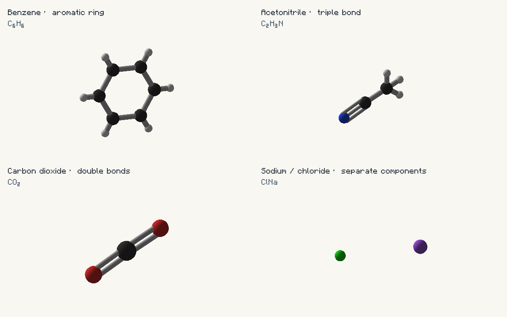
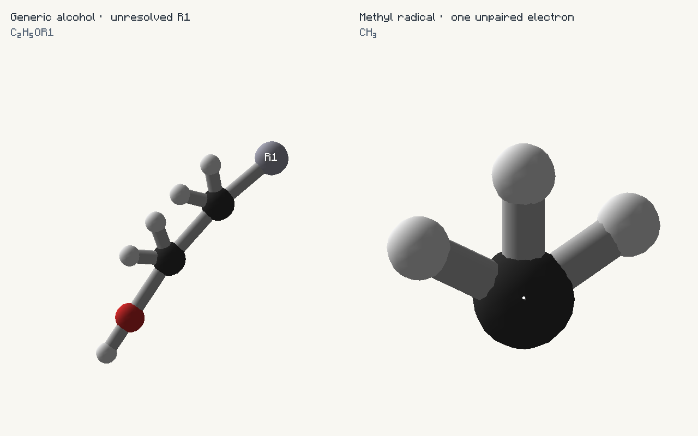
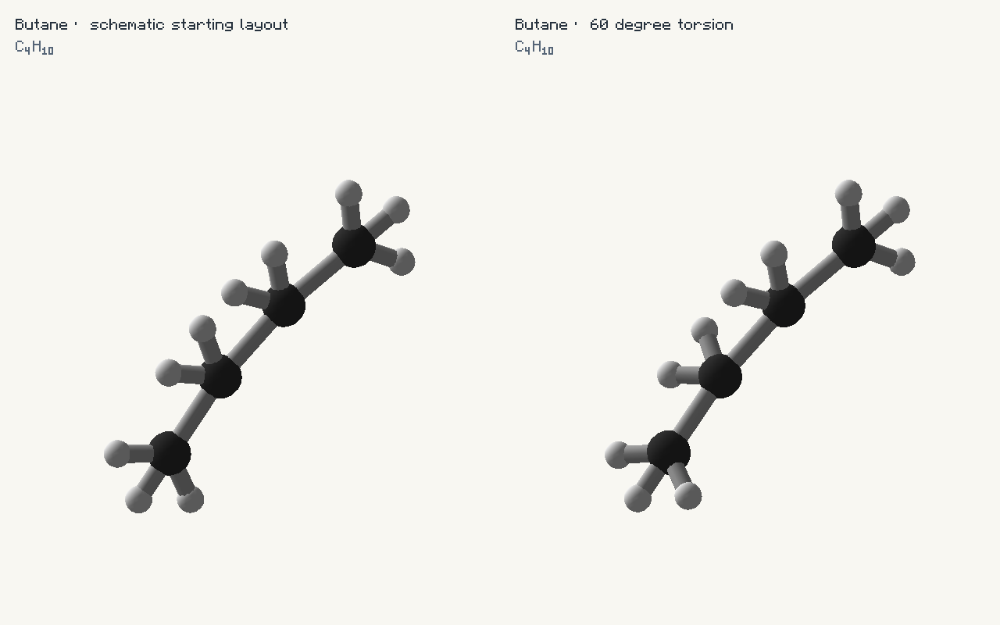

SMILES and JSON: groups, radicals and geometry
Choose a molecular graph with SMILES, add explicit authoring metadata in JSON or the shared Java/Groovy API, then apply bounded geometric constraints when needed.
Java examples run in your host mod’s common initialization with import io.github.wurtzitane.avogadro.api.*;. Groovy examples belong in a GroovyScript post-init script; both sides need GroovyScript, but connected clients need no local script. JSON is one definition per file under config/avogadro/server/data/chemistry/molecules/; the filename supplies the path of the ID. Use /avogadro reload for JSON changes; restart for script changes. The library registers none of these samples automatically.
Complete Java companion · Complete Groovy companion
Supported SMILES surface
| Feature | Example | Behavior |
|---|---|---|
| Organic elements / branching | CC(O)C | Implicit H follows the existing valence rules; a schematic layout is generated. |
| Single, double, triple bonds | CC, C=C, CC#N | Explicit multiplicity is rendered. The ordinary parser does not support quadruple-bond SMILES; use typed explicit bonds. |
| Aromatic atoms | c1ccccc1, [nH]1cccc1 | Existing schematic aromatic behavior is retained; aromatic links are drawn as single connections in the legacy layout, not an aromaticity/bond-order solver. |
| Ring closures | C1CCCCC1, C%12CCCCC%12 | Digits pair connections, not atoms; tetrahedral ring ordering is handled by the stereo parser. |
| Disconnected components | [Na+].[Cl-] | Both ions are rendered separately; the dot is not a bond and does not supply a crystal packing. |
| Bracket atoms / H | [C], [CH3], [NH4+] | Bracket H counts are explicit; charge does not automatically create examiner electron-shell data. |
| Isotope prefix | [13C] | The element is read correctly. Stereo input retains isotope mass for CIP; average-mass and nuclear-examiner APIs remain separate. |
| Tetrahedral chirality | C[C@H](O)C(=O)O | Validated 3D coordinates and R/S; see the dedicated chirality guide and limits. |
| External groups | *CCO, [*:1]CCO | Standard wildcard becomes an R or R1 placeholder, with no invented internal atoms or mass. |
| Unsupported forms | F/C=C/F, reaction >, CXSMILES | Directional-bond stereochemistry and reactions are rejected; do not treat this as a complete chemistry parser. |

AvogadroApi.owner("chemistry_guide").register(
new MoleculeBuilder("chemistry:benzene").smiles("c1ccccc1"));import io.github.wurtzitane.avogadro.api.*
mods.avogadro.molecules.register(
new MoleculeBuilder("chemistry:benzene").smiles("c1ccccc1")){
"name": "Benzene · aromatic ring",
"smiles": "c1ccccc1"
}AvogadroApi.owner("chemistry_guide").register(
new MoleculeBuilder("chemistry:nitrile").smiles("CC#N"));import io.github.wurtzitane.avogadro.api.*
mods.avogadro.molecules.register(
new MoleculeBuilder("chemistry:nitrile").smiles("CC#N")){
"name": "Acetonitrile · triple bond",
"smiles": "CC#N"
}AvogadroApi.owner("chemistry_guide").register(
new MoleculeBuilder("chemistry:carbon_dioxide").smiles("O=C=O"));import io.github.wurtzitane.avogadro.api.*
mods.avogadro.molecules.register(
new MoleculeBuilder("chemistry:carbon_dioxide").smiles("O=C=O")){
"name": "Carbon dioxide · double bonds",
"smiles": "O=C=O"
}AvogadroApi.owner("chemistry_guide").register(
new MoleculeBuilder("chemistry:ions").smiles("[Na+].[Cl-]"));import io.github.wurtzitane.avogadro.api.*
mods.avogadro.molecules.register(
new MoleculeBuilder("chemistry:ions").smiles("[Na+].[Cl-]")){
"name": "Sodium / chloride · separate components",
"smiles": "[Na+].[Cl-]"
}External R-groups
A placeholder uses element * and a visible label of 1–8 ASCII identifier characters, such as R1, Ar or Side. It is a group attachment position, not a fictitious element and not a hydrogen omission. It has no implicit hydrogens, nuclear model, specified radical count or unique mass. MoleculeWeight.calculate rejects unresolved groups; composition(structure) counts only known real atoms.

AvogadroApi.owner("chemistry_guide").register(
new MoleculeBuilder("chemistry:external_group").smiles("[*:1]CCO"));import io.github.wurtzitane.avogadro.api.*
mods.avogadro.molecules.register(
new MoleculeBuilder("chemistry:external_group").smiles("[*:1]CCO")){
"name": "Generic alcohol · unresolved R1",
"smiles": "[*:1]CCO"
}var part = new StructureBuilder();
int group = part.addRGroup("R1", 0, 0, 0);
int carbon = part.addAtom("C", 1.5, 0, 0);
part.bond(group, carbon).attachment("side_chain", group);
StructureFragment fragment = part.build();Explicit atom JSON uses {"e":"*","x":0,"y":0,"z":0,"label":"R1"}. To rename a wildcard from SMILES, call builder.rGroup(index, "Ar"), or set "atom_annotations":{"0":{"label":"Ar"}}. To resolve it, use the existing fragment editor to replace the wildcard with a real atom, or remove it and attach a complete fragment through the existing assembly/attachment API. Supply all missing atoms and bonds, including hydrogen; resolution does not invent valence completion.
Explicit radicals
AvogadroApi.owner("chemistry_guide").register(
new MoleculeBuilder("chemistry:radical").smiles("[CH3]").radical(0, 1));import io.github.wurtzitane.avogadro.api.*
mods.avogadro.molecules.register(
new MoleculeBuilder("chemistry:radical").smiles("[CH3]").radical(0, 1)){
"name": "Methyl radical · one unpaired electron",
"smiles": "[CH3]",
"atom_annotations": {
"0": {
"radical_electrons": 1
}
}
}[CH3] provides the methyl atom inventory. The explicit radical_electrons: 1 annotation supplies one unpaired electron and adds a stationary, screen-facing dot attached to that atom’s moving position. Counts 0–4 are accepted; zero clears an inherited radical. The count survives copies, fragment transformations, JSON, synchronization, viewers and exports. It neither changes the bonds nor synthesizes electron-shell configurations, charges or spin multiplicity. Lowercase SMILES still means aromatic spelling, never radical shorthand.
On explicit atoms use {"e":"C","x":0,"y":0,"z":0,"radical_electrons":1}. In a StructureBuilder, call radical(index, count). Labels and dots use the active resource-pack font. Ordinary atoms keep their existing shaded appearance.
Bond length and dihedral constraints

AvogadroApi.owner("chemistry_guide").register(
new MoleculeBuilder("chemistry:butane_gauche").smiles("CCCC").constraints(StructureConstraints.builder()
.bondLength(1, 2, 1.54).dihedral(0, 1, 2, 3, 60).build()));import io.github.wurtzitane.avogadro.api.*
mods.avogadro.molecules.register(
new MoleculeBuilder("chemistry:butane_gauche").smiles("CCCC").constraints(StructureConstraints.builder()
.bondLength(1, 2, 1.54).dihedral(0, 1, 2, 3, 60).build())){
"name": "Butane · 60 degree torsion",
"smiles": "CCCC",
"constraints": [
{
"type": "bond_length",
"atoms": [
1,
2
],
"length": 1.54
},
{
"type": "dihedral",
"atoms": [
0,
1,
2,
3
],
"degrees": 60.0
}
]
}Targets apply once during loading. Length translates the second bond endpoint’s connected component; torsion rotates the third endpoint’s side about the second-to-third bond. Positive torsion follows the right-hand rule around B→C, from the perpendicular B→A projection to C→D. Coordinates share one unit; the example interprets it as ångströms. The full graph remains present.
Use constraints.apply(fragment) for reusable fragments, or constraints.apply(structure) for loaded geometry with verified stereo. In a structure recipe, add {"op":"constrain","constraints":[...]} to its ordered operations. Ring bonds, collinear torsions, missing connections, nonfinite values and conflicting final targets are rejected. There is no ring solver, collision resolution or force-field minimization. At most 64 targets are allowed; lengths are positive and at most 10000 units.
JSON ordering and validation
- Select one geometry source:
smiles, explicit atoms/bonds,structure, orcopy. - Inline atom fields and
atom_annotationsattach explicit group/radical metadata. Top-level annotations override the corresponding inherited annotation; omitted indices remain unchanged. - Top-level
constraintsoperate on the resulting geometry. Labels and annotations remain attached to their atom indices. - Matching fields such as
items,fluids, tags and material associations work as before. A generated sample can represent a generic structure, but it has no complete mass until its groups are resolved.
Ordinary SMILES retain written heavy-atom order with added hydrogens afterward. Stereo SMILES canonicalize atom order. Never assume a canonicalized center’s index: inspect the loaded graph before applying index-specific metadata. Unknown annotation/constraint fields and fractional indices fail explicitly. See the shared field reference for remaining schema details.